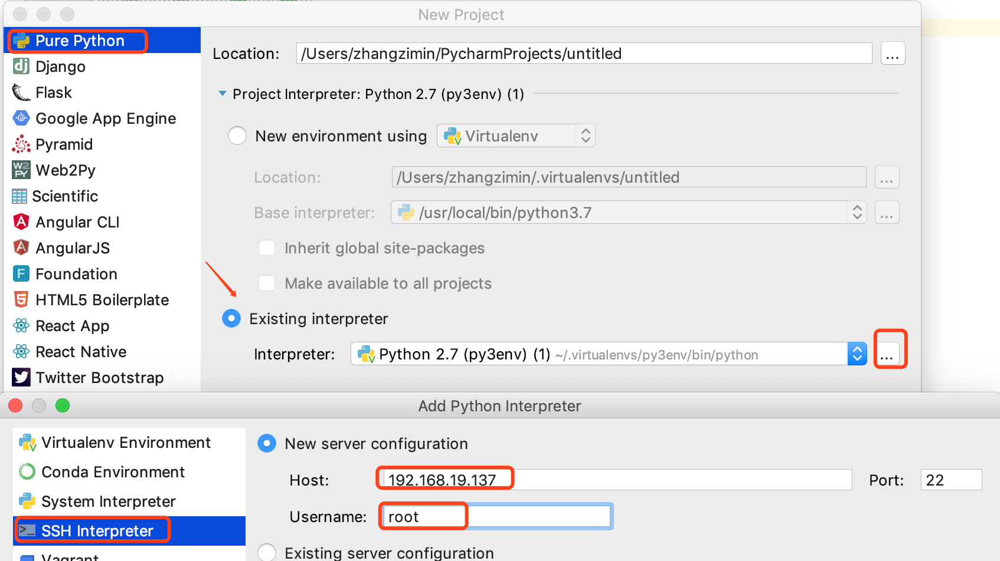
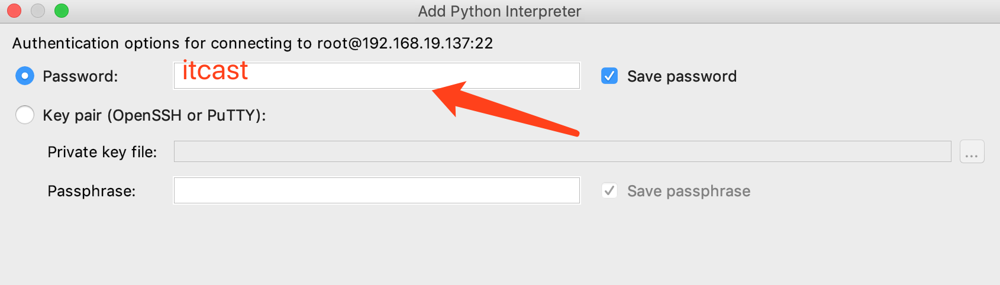
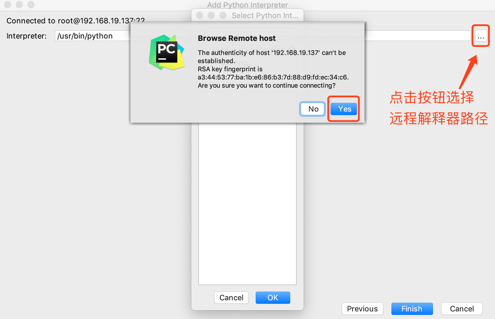
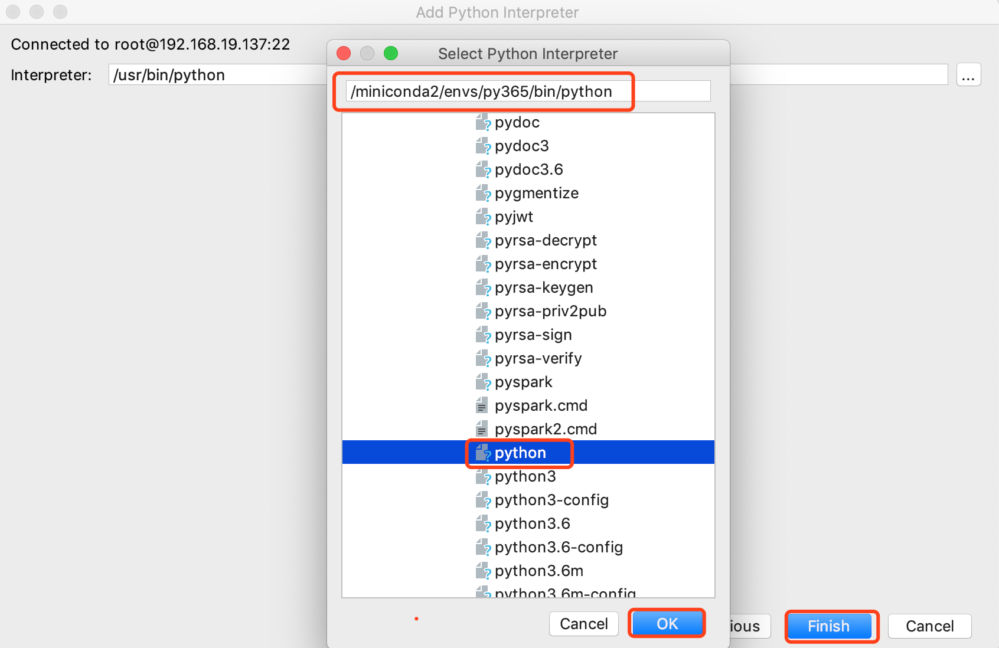
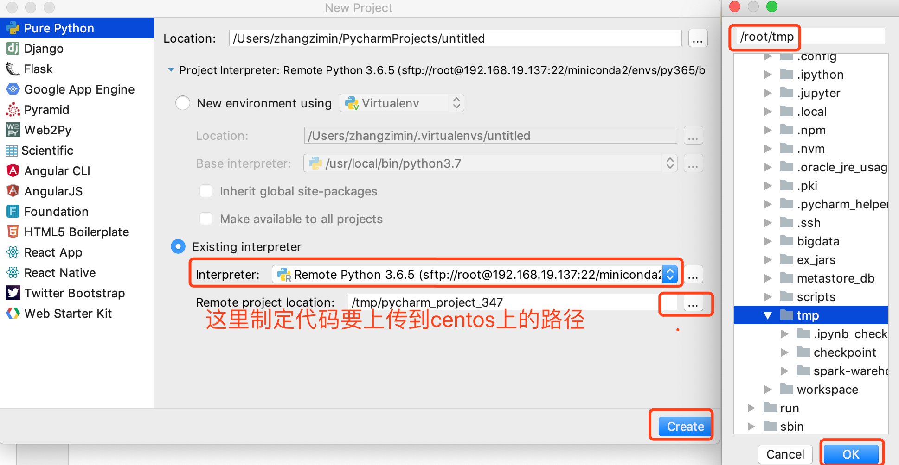
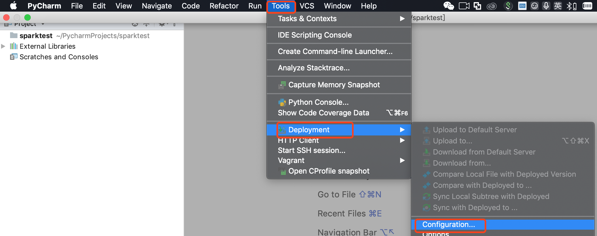
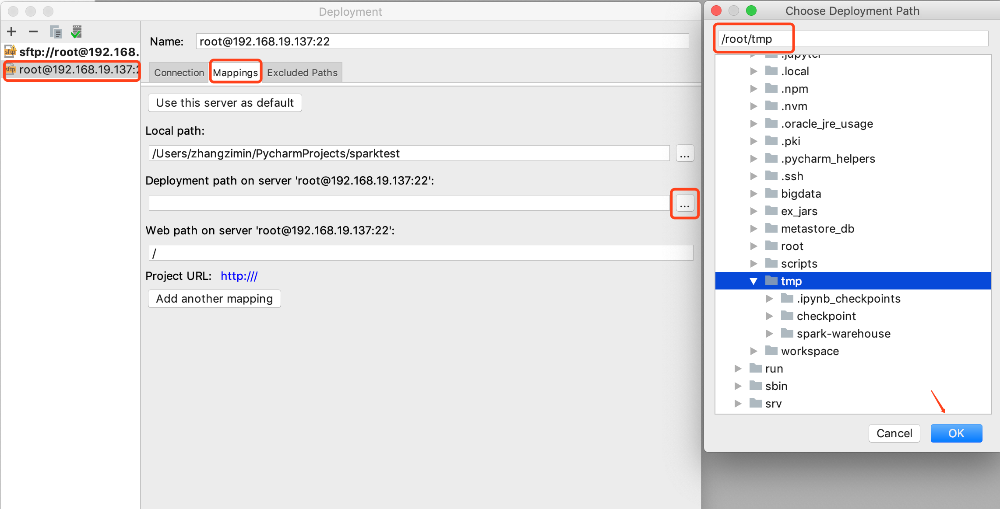
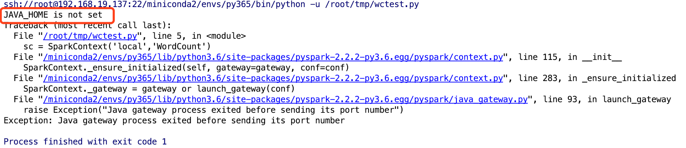
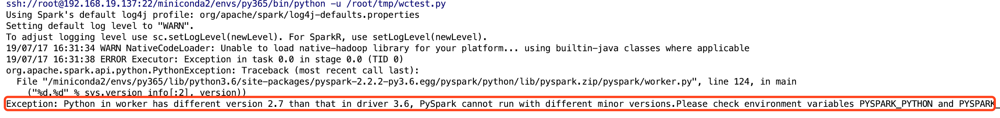

6.4 spark-core 案例_点击日志分析
学习目标：
- 应用Pycharm编写代码实现Word Count案例
- 应用Spark RDD 实现点击日志分析案例
1 Pycharm 编写Spark WordCount案例
Pycharm环境配置
新建项目->选择Pure Python->选择 Existing interpreter-> 点击后面的 …按钮->
选择 SSH Interpreter->选择 New server configuration Host 填写 192.168.19.137
Username 填写root 填好后右下角点击next

稍等之后 提示填写密码 填入itcast 填好后点击右下角 next按钮

与centos 建立连接之后，需要制定centos上的python解释器路径，第一次连接提示是否与centos建立连接，单击Yes

稍等会显示centos上的文件目录结构，找到/miniconda2/envs/py365/bin/python 选中之后点击ok 然后点击 Finish

点击Finish 后当前界面消失，会回到创建项目的界面，此时需要制定centos上的代码路径，点击Remote project location后面的按钮 弹出文件浏览框后 选则centos上的文件夹 这里选择了/root/tmp 作为代码存储路径 选好后点击 ok 然后点击 Create

项目创建后，pycharm会自动连接centos，读取centos上的python解释器资源，此时编写代码，在主机中的代码会自动同步到centos中，运行代码时也会在centos的python环境中运行
配置部署关联路径 Tools->Deployment->Configuration ...
在打开的页面中 点击root@192.168.19.137 右侧区域选择 Mappings选项卡
选择Deployment path on server … 后面的 … 按钮 找到 /root/tmp 点击ok 然后点击确定，这时程序运行时会自动找到centos中 /root/tmp下的代码 而不是运行主机中的代码


代码
from pyspark import SparkContext
if __name__ == '__main__':
sc = SparkContext('local','WordCount')
counts = sc.textFile('file:///root/tmp/test.txt') \
.flatMap(lambda line: line.split(" ")) \
.map(lambda x: (x, 1)) \
.reduceByKey(lambda a, b: a + b)
output = counts.collect()
print(output)
sc.stop()
运行后提示 JAVA_HOME is not set，没有设置JAVA_HOME(Java运行环境)

- 解决办法 添加如下代码
import os JAVA_HOME='/root/bigdata/jdk' #向系统环境变量中添加 JAVA_HOME路径 os.environ['JAVA_HOME']=JAVA_HOME再次运行 提示 Exception: Python in worker has different version 2.7 than that in driver 3.6, PySpark cannot run with different minor versions.Please check environment variables PYSPARK_PYTHON and PYSPARK_DRIVER_PYTHON are correctly set. 需要指定当前使用的Python解释器位置

- 解决办法 在环境变量中 指定PYSPARK_PYTHON 和 PYSPARK_DRIVER_PYTHON
PYSPARK_PYTHON = "/miniconda2/envs/py365/bin/python" os.environ["PYSPARK_PYTHON"] = PYSPARK_PYTHON os.environ["PYSPARK_DRIVER_PYTHON"] = PYSPARK_PYTHON
2 通过spark实现点击日志分析
在各种类型的网站中，经常要统计页面访问量，常见指标uv、pv和topN
- PV page view 页面访问量 访问一次记一次pv
- UV Unique Visitor 独立访客访问数，一台设备算一次UV
- topN 访问量最大的前N个页面
数据示例
#每条数据代表一次访问记录 包含了ip 访问时间 访问的请求方式 访问的地址...信息
194.237.142.21 - - [18/Sep/2013:06:49:18 +0000] "GET /wp-content/uploads/2013/07/rstudio-git3.png HTTP/1.1" 304 0 "-" "Mozilla/4.0 (compatible;)"
183.49.46.228 - - [18/Sep/2013:06:49:23 +0000] "-" 400 0 "-" "-"
163.177.71.12 - - [18/Sep/2013:06:49:33 +0000] "HEAD / HTTP/1.1" 200 20 "-" "DNSPod-Monitor/1.0"
163.177.71.12 - - [18/Sep/2013:06:49:36 +0000] "HEAD / HTTP/1.1" 200 20 "-" "DNSPod-Monitor/1.0"
101.226.68.137 - - [18/Sep/2013:06:49:42 +0000] "HEAD / HTTP/1.1" 200 20 "-" "DNSPod-Monitor/1.0"
101.226.68.137 - - [18/Sep/2013:06:49:45 +0000] "HEAD / HTTP/1.1" 200 20 "-" "DNSPod-Monitor/1.0"
60.208.6.156 - - [18/Sep/2013:06:49:48 +0000] "GET /wp-content/uploads/2013/07/rcassandra.png HTTP/1.0" 200 185524 "http://cos.name/category/software/packages/" "Mozilla/5.0 (Windows NT 6.1) AppleWebKit/537.36 (KHTML, like Gecko) Chrome/29.0.1547.66 Safari/537.36"
222.68.172.190 - - [18/Sep/2013:06:49:57 +0000] "GET /images/my.jpg HTTP/1.1" 200 19939 "http://www.angularjs.cn/A00n" "Mozilla/5.0 (Windows NT 6.1) AppleWebKit/537.36 (KHTML, like Gecko) Chrome/29.0.1547.66 Safari/537.36"
222.68.172.190 - - [18/Sep/2013:06:50:08 +0000] "-" 400 0 "-" "-"
访问的pv
pv：网站的总访问量
from pyspark import SparkContext sc = SparkContext('local[2]','PV') rdd1 = sc.textFile("file:///root/tmp/access.log") #把每一行数据记为("pv",1) rdd2 = rdd1.map(lambda x:("pv",1)).reduceByKey(lambda a,b:a+b) rdd2.collect() sc.stop()访问的uv
uv：网站的独立用户访问量
from pyspark import SparkContext sc = SparkContext('local[2]','UV') rdd1 = sc.textFile("file:///root/tmp/access.log") #对每一行按照空格拆分，将ip地址取出 rdd2 = rdd1.map(lambda x:x.split(" ")).map(lambda x:x[0]) #把每个ur记为1 rdd3 = rdd2.distinct().map(lambda x:("uv",1)) rdd4 = rdd3.reduceByKey(lambda a,b:a+b) rdd4.saveAsTextFile("hdfs:///uv/result") sc.stop()访问的topN
from pyspark import SparkContext sc = SparkContext('local[2]','TopN') rdd1 = sc.textFile("file:///root/tmp/access.log") #对每一行按照空格拆分，将url数据取出，把每个url记为1 rdd2 = rdd1.map(lambda x:x.split(" ")).filter(lambda x:len(x)>10).map(lambda x:(x[10],1)) #对数据进行累加，按照url出现次数的降序排列 rdd3 = rdd2.reduceByKey(lambda a,b:a+b).sortBy(lambda x:x[1],ascending=False) #取出序列数据中的前n个 rdd4 = rdd3.take(5) rdd4.collect() sc.stop()
总结
- 通过Pycharm远程编写代码
- Pycharm调用远程Python环境
- 代码上传到 Centos上运行
- 点击日志分析
- PV UV的概念
- 熟悉spark RDD的api